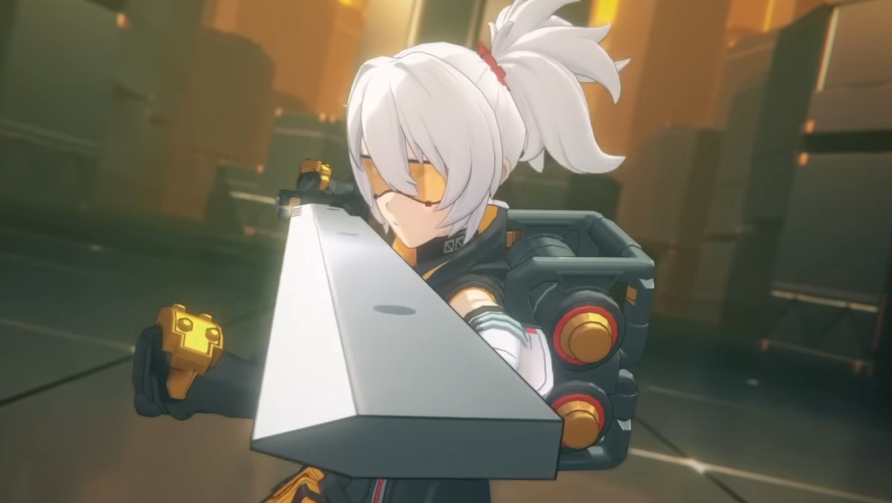

Who is Solider 11?
Soldier 11 is an S-Rank Melee Fire Combat Agent having a simple but effective combat style, with some room for skillful play. Her kit is easy to understand, to execute and fits right into various combat scenarios and team compositions. While her damage isn’t Meta-Defining, she does just enough to hold her own in endgame content, making her a reasonable choice of investment until you set your eyes on Limited DPS considering she is available from the Standard Banner.
Soldier 11 Core kit

The entirety of her kit consists of simple direct damage dealing abilities almost exclusively, with the only exception being attacks which feature the presence of her Signature mechanic “Fire Suppression”. Such attacks are subject to a special timing mechanic, which states that when activating the ability in question “at the right moment”, she will use an Enhanced version of the attack instead. The so-called right moment requires you to execute the desired attack input roughly around the ending of the current attack animation without any other inputs beforehand aka no button mashing!
bluk of Solider 11 damage come from her core passive as it have a high multiplier but it can be a tricky to time each attack but with good timing you can melt enemys
The high highs but low lows
Incredibly simple playstyle once you get the hang of it. Core Passive and Additional ability are a pile of free damage that doesn’t require you to do anything.
No stand-out features other than decent damage output, Basic attacks have a special “timed” mechanic, requiring you to pause a short moment in between each attack in order to deal maximum damage. This mechanic can be bypassed through the use of some abilities but should still be mastered to unlock Soldier 11’s full potential which won't be for everyone. Limited synergy with other characters.
IMO
Soldier 11 presents herself as a decent DPS option having both - reasonably strong burst damage options when aligning her most powerful attacks with enemy Stun windows, as well as dealing decent sustained damage thanks to her constant access to Fire Suppression enhanced attacks. While playing her perfectly offers greater Flexibility, not doing so isn’t punishing, making her a great option to build early and serve you well, Soldier 11 can still a long way as even when new agent come out, she can still do her job well